Detect LD mismatch between GWAS zscores and UKBB LD reference using DENTIST and SuSiE_RSS
Kaixuan Luo
2023-12-05
Last updated: 2023-12-05
Checks: 7 0
Knit directory: multigroup_ctwas_analysis/
This reproducible R Markdown analysis was created with workflowr (version 1.7.0). The Checks tab describes the reproducibility checks that were applied when the results were created. The Past versions tab lists the development history.
Great! Since the R Markdown file has been committed to the Git repository, you know the exact version of the code that produced these results.
Great job! The global environment was empty. Objects defined in the global environment can affect the analysis in your R Markdown file in unknown ways. For reproduciblity it’s best to always run the code in an empty environment.
The command set.seed(20231112) was run prior to running the code in the R Markdown file. Setting a seed ensures that any results that rely on randomness, e.g. subsampling or permutations, are reproducible.
Great job! Recording the operating system, R version, and package versions is critical for reproducibility.
Nice! There were no cached chunks for this analysis, so you can be confident that you successfully produced the results during this run.
Great job! Using relative paths to the files within your workflowr project makes it easier to run your code on other machines.
Great! You are using Git for version control. Tracking code development and connecting the code version to the results is critical for reproducibility.
The results in this page were generated with repository version 8d658c8. See the Past versions tab to see a history of the changes made to the R Markdown and HTML files.
Note that you need to be careful to ensure that all relevant files for the analysis have been committed to Git prior to generating the results (you can use wflow_publish or wflow_git_commit). workflowr only checks the R Markdown file, but you know if there are other scripts or data files that it depends on. Below is the status of the Git repository when the results were generated:
Ignored files:
Ignored: .Rhistory
Ignored: .Rproj.user/
Unstaged changes:
Modified: analysis/detect_LD_mismatch_gwas_UKBBref_susie_rss.Rmd
Note that any generated files, e.g. HTML, png, CSS, etc., are not included in this status report because it is ok for generated content to have uncommitted changes.
These are the previous versions of the repository in which changes were made to the R Markdown (analysis/detect_LD_mismatch_gwas_UKBBref_DENTIST_susie_rss.Rmd) and HTML (docs/detect_LD_mismatch_gwas_UKBBref_DENTIST_susie_rss.html) files. If you’ve configured a remote Git repository (see ?wflow_git_remote), click on the hyperlinks in the table below to view the files as they were in that past version.
| File | Version | Author | Date | Message |
|---|---|---|---|---|
| Rmd | 8d658c8 | kevinlkx | 2023-12-05 | update plots |
| html | 0a79e85 | kevinlkx | 2023-12-04 | Build site. |
| Rmd | 599682e | kevinlkx | 2023-12-04 | add some diagnosis plots |
| html | e0f339f | kevinlkx | 2023-11-29 | Build site. |
| Rmd | ed98001 | kevinlkx | 2023-11-29 | minor update on the messages |
| html | cbdb9e4 | kevinlkx | 2023-11-29 | Build site. |
| Rmd | 93529bb | kevinlkx | 2023-11-29 | minor update on the messages |
| html | af426ae | kevinlkx | 2023-11-29 | Build site. |
| Rmd | 8883dec | kevinlkx | 2023-11-29 | update susie_rss LDL result with chr6 result |
| html | c9fee4b | kevinlkx | 2023-11-29 | Build site. |
| Rmd | c195252 | kevinlkx | 2023-11-29 | compare DENTIST vs. susie_rss results |
Load packages and functions
library(ctwas)
library(susieR)
library(foreach)
library(data.table)
library(tidyverse)
suppressMessages(library(GenomicRanges))
suppressMessages(library(rtracklayer))# Load UKBB reference LD matrix and SNP info
load_UKBB_R_snp_info <- function(region_df, ld_R_dir, filestem = "ukb_b38_0.1"){
filename <- sprintf("%s_chr%s.R_snp.%d_%d", filestem,
gsub("chr", "", region_df$chr), region_df$start, region_df$stop)
print(filename)
if(!file.exists(file.path(ld_R_dir, paste0(filename, ".RDS"))) || !file.exists(file.path(ld_R_dir, paste0(filename, ".Rvar")))){
stop("LD Reference files not exist!")
}
R_snp <- readRDS(file.path(ld_R_dir, paste0(filename, ".RDS")))
R_snp_info <- read.table(file.path(ld_R_dir, paste0(filename, ".Rvar")), header=TRUE)
return(list(R_snp = R_snp, R_snp_info = R_snp_info))
}
# Match GWAS sumstats with LD reference files. Only keep variants included in LD reference.
match_gwas_R_snp <- function(sumstats, R, snp_info){
sumstats <- sumstats[sumstats$id %in% snp_info$id,]
R_snp_index <- na.omit(match(sumstats$id, snp_info$id))
sumstats$R_snp_index <- R_snp_index
R <- R[R_snp_index, R_snp_index]
stopifnot(nrow(sumstats) == nrow(R))
return(list(sumstats = sumstats, R = R))
}
liftOver_hg19ToHg38 <- function(gr){
seqlevelsStyle(gr) <- "UCSC"
ch <- import.chain("~/softwares/liftOver/hg19ToHg38.over.chain")
gr <- unlist(liftOver(gr, ch))
genome(gr) <- "hg38"
return(gr)
}LD Regions (ldetect blocks)
regions <- system.file("extdata/ldetect", "EUR.b38.bed", package = "ctwas")
regions_df <- read.table(regions, header = T)
regions_df <- regions_df %>% dplyr::arrange(chr, start, stop) %>% dplyr::mutate(locus = 1:nrow(regions_df))LDL
trait <- "LDL"sumstats <- readRDS("/project2/xinhe/shared_data/multigroup_ctwas/gwas/gwas_processed/LDL-ukb-d-30780_irnt.sumstats.RDS")
# sumstats$z <- sumstats$beta/sumstats$se
# z_snp <- sumstats[,c("ID", "A1", "A2", "z", "N")]
# colnames(z_snp) <- c("id", "A1", "A2", "z", "ss")
# z_snp <- z_snp[!(z_snp$id %in% z_snp$id[duplicated(z_snp$id)]),] #drop multiallelic variants (id not unique)
sumstats <- makeGRangesFromDataFrame(sumstats, start.field = "pos", end.field = "pos", keep.extra.columns = T)
sumstats_hg38 <- liftOver_hg19ToHg38(sumstats) %>% as.data.frame() %>%
dplyr::rename(chr = seqnames, pos = start, snp = SNP) %>%
dplyr::select(chr, pos, snp, A1, A2, beta, se, p, freq)
sumstats_hg38 <- mapgen::assign_snp_locus(sumstats_hg38, regions_df)Compare DENTIST and SuSiE RSS pvalues in chr22
load DENTIST results
CHR=22
dentist.dir <- paste0("/project2/xinhe/shared_data/multigroup_ctwas/DENTIST/", trait)
dentist.res.file <- file.path(dentist.dir, paste0("LDL-ukb-d-30780_irnt.ukb_chr", CHR, ".b38.DENTIST.full.txt"))
dentist.chr.df <- data.table::fread(dentist.res.file)
colnames(dentist.chr.df) <- c("rsID", "chisq", "LP", "ifDup")
dentist.chr.snps <- dentist.chr.df$rsID
dentist_detected_snps <- dentist.chr.df$rsID[which(dentist.chr.df$LP > -log10(5e-8))]
cat(sprintf("%d variants with DENTIST result in chr%s \n", length(dentist.chr.snps), CHR))
cat(sprintf("%d detected variants with DENTIST pvalue < 5e-8.\n", length(dentist_detected_snps)))# 118796 variants with DENTIST result in chr22
# 0 detected variants with DENTIST pvalue < 5e-8.Load Allele Frequency
dentist.dir <- paste0("/project2/xinhe/shared_data/multigroup_ctwas/DENTIST/", trait)
dentist.chr.freq.df <- data.table::fread(file.path(dentist.dir, paste0("LDL-ukb-d-30780_irnt.ukb_chr", CHR, ".b38.frq")))load SuSiE RSS result
select_loci <- paste0("chr", CHR)
susie_rss_dir <- paste0("/project2/xinhe/shared_data/multigroup_ctwas/ld_mismatch_susie_rss/", trait)
condz_dist_chr <- readRDS(file.path(susie_rss_dir, paste0(trait, ".condz.dist.", select_loci, "loci.rds")))
condz_dist_chr.df <- do.call(rbind.data.frame, condz_dist_chr)
susierss.chr.snps <- condz_dist_chr.df$id
susierss_detected_snps <- condz_dist_chr.df$id[which(condz_dist_chr.df$p_diff < 5e-8)]
susierss_detected_flipped_snps <- condz_dist_chr.df$id[which(condz_dist_chr.df$logLR > 2 & abs(condz_dist_chr.df$z) > 2)]
cat(sprintf("%d variants with susie_rss result in chr%s \n", length(susierss.chr.snps), CHR))
cat(sprintf("%d detected variants with susie_rss pvalue < 5e-8.\n", length(susierss_detected_snps)))
cat(sprintf("%d detected variants with susie_rss allele flipped.\n", length(susierss_detected_flipped_snps)))# 120845 variants with susie_rss result in chr22
# 93 detected variants with susie_rss pvalue < 5e-8.
# 3 detected variants with susie_rss allele flipped.Compare SuSiE RSS with DENTIST result
cat(sprintf("%d variants with DENTIST result \n", length(dentist.chr.snps)))
cat(sprintf("%d variants with susie_rss result \n", length(susierss.chr.snps)))
cat(sprintf("%d variants with both DENTIST and susie_rss result \n", length(intersect(dentist.chr.snps, susierss.chr.snps))))
cat(sprintf("%d variants detected by both DENTIST and susie_rss (pvalue < 5e-8).\n", length(intersect(dentist_detected_snps, susierss_detected_snps))))
common.snps <- intersect(dentist.chr.snps, susierss.chr.snps)
df <- data.frame(rsID = common.snps, dentist.pval = NA, susie.pval = NA)
m.dentist <- match(common.snps, dentist.chr.df$rsID)
df$dentist.pval <- dentist.chr.df$LP[m.dentist]
m.susie <- match(common.snps, condz_dist_chr.df$id)
df$susie.pval <- -log10(condz_dist_chr.df$p_diff[m.susie])
df$z <- condz_dist_chr.df$z[m.susie]
df$condmean <- condz_dist_chr.df$condmean[m.susie]
df$logLR <- condz_dist_chr.df$logLR[m.susie]
df$Freq_A1 <- dentist.chr.freq.df$Freq_A1[match(common.snps, dentist.chr.freq.df$RS_ID)]
df$MAF <- pmin(df$Freq_A1, 1-df$Freq_A1)
m.sumstats <- match(common.snps, sumstats_hg38$snp)
df$p <- sumstats_hg38$p[m.sumstats]
df$locus <- sumstats_hg38$locus[m.sumstats]
df$freq_A1_GWAS <- sumstats_hg38$freq[m.sumstats]
df$MAF_GWAS <- pmin(df$freq_A1_GWAS, 1-df$freq_A1_GWAS)
df <- df %>% dplyr::mutate(allele_flipping = ifelse(logLR > 2 & abs(z) > 2, 1, 0))
df <- df %>% dplyr::mutate(type = case_when(susie.pval > -log10(5e-8) & dentist.pval > -log10(5e-8) ~ "SuSiE & DENTIST",
susie.pval > -log10(5e-8) ~ "SuSiE only",
dentist.pval > -log10(5e-8) ~ "DENTIST only",
.default = "null"))
df$type <- factor(df$type, levels = c("null", "SuSiE only", "DENTIST only", "SuSiE & DENTIST"))
table(df$type)# 118796 variants with DENTIST result
# 120845 variants with susie_rss result
# 118796 variants with both DENTIST and susie_rss result
# 0 variants detected by both DENTIST and susie_rss (pvalue < 5e-8).
#
# null SuSiE only DENTIST only SuSiE & DENTIST
# 118705 91 0 0ggplot(df, aes(x = dentist.pval, y = susie.pval)) +
geom_point(alpha=0.6) +
xlim(0, 100) + ylim(0, 100) +
labs(x = "DENTIST -log10P", y = "SuSiE RSS -log10P", title = paste0(trait, " chr", CHR)) +
geom_abline(intercept = 0, slope = 1) +
geom_vline(xintercept = -log10(5e-8), col = "red") +
geom_hline(yintercept = -log10(5e-8), col = "red") +
theme_bw()# Warning: Removed 6 rows containing missing values (`geom_point()`).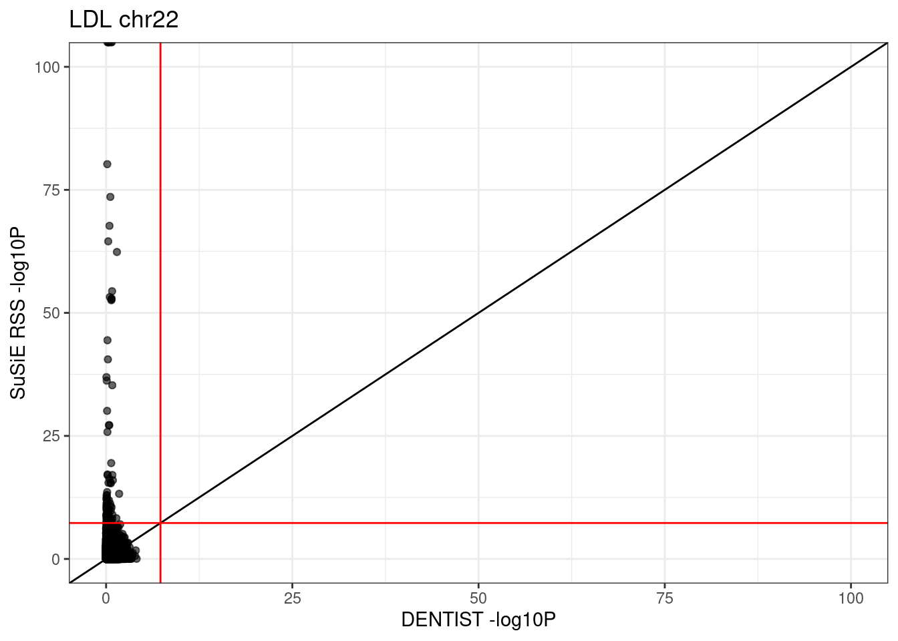
| Version | Author | Date |
|---|---|---|
| 0a79e85 | kevinlkx | 2023-12-04 |
ggplot(df %>% dplyr::mutate(susie.pval = ifelse(susie.pval > 10, 10, susie.pval)),
aes(x = condmean, y = z, col = susie.pval)) +
geom_point(alpha=0.6) +
geom_abline(intercept = 0, slope = 1) +
scale_colour_gradient(low = "grey", high = "blue", name = "SuSiE -log10P \n(truncated at 10)") +
labs(x = "Expected value from SuSiE", y = "Observed z scores", title = paste0(trait, " chr", CHR)) +
theme_bw()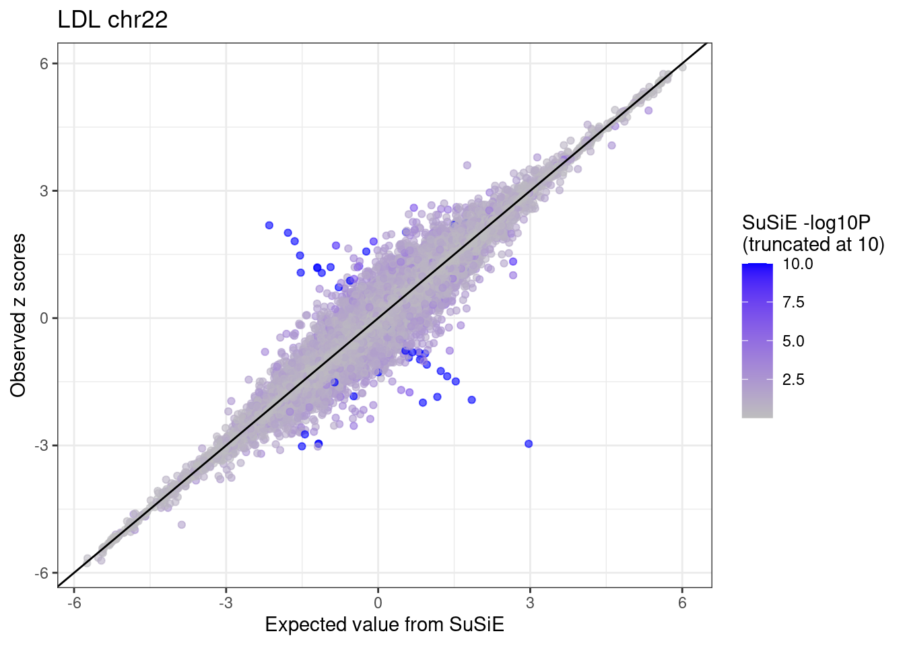
| Version | Author | Date |
|---|---|---|
| 0a79e85 | kevinlkx | 2023-12-04 |
ggplot(df,
aes(x = condmean, y = z, col = dentist.pval)) +
geom_point(alpha=0.6) +
geom_abline(intercept = 0, slope = 1) +
scale_colour_gradient(low = "grey", high = "blue", name = "DENTIST -log10P") +
labs(x = "Expected value from SuSiE", y = "Observed z scores", title = paste0(trait, " chr", CHR)) +
theme_bw()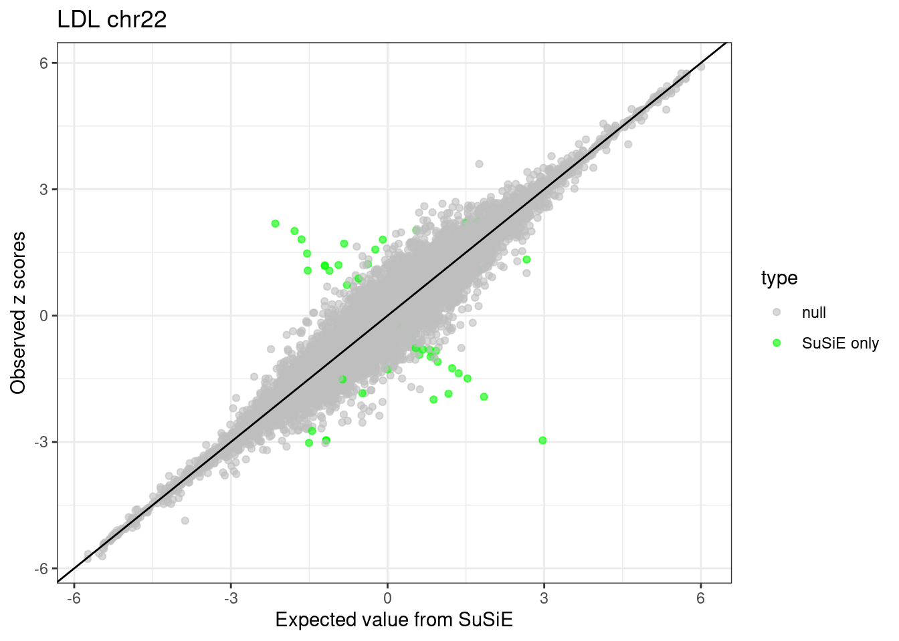
| Version | Author | Date |
|---|---|---|
| 0a79e85 | kevinlkx | 2023-12-04 |
ggplot(df, aes(x = condmean, y = z, col = type)) +
geom_point(alpha=0.6) +
geom_abline(intercept = 0, slope = 1) +
scale_colour_manual(values = c("null" = "grey", "SuSiE only" = "green", "DENTIST only" = "blue", "SuSiE & DENTIST" = "red")) +
labs(x = "Expected value from SuSiE", y = "Observed z scores", title = paste0(trait, " chr", CHR)) +
theme_bw()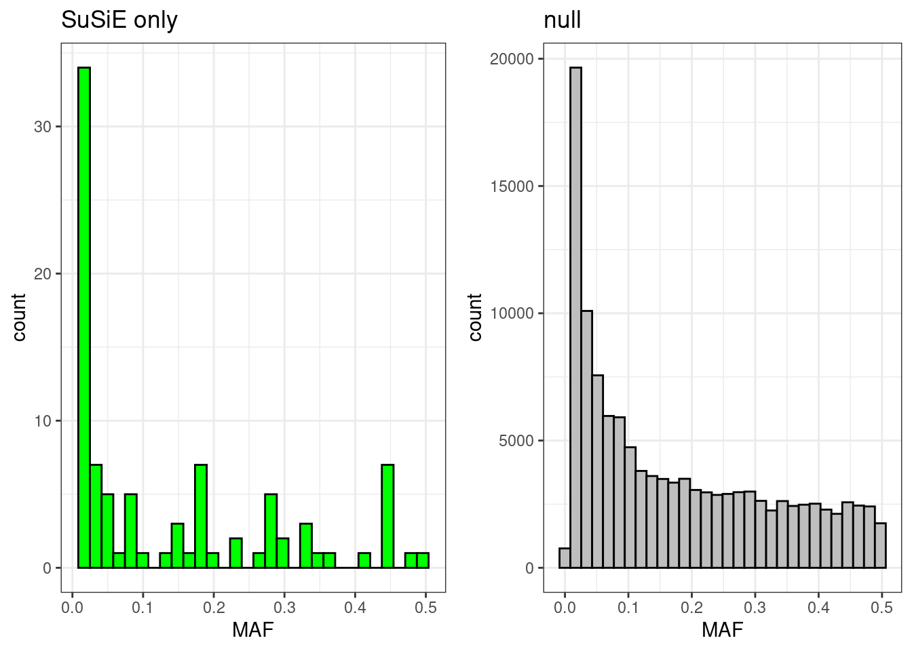
| Version | Author | Date |
|---|---|---|
| 0a79e85 | kevinlkx | 2023-12-04 |
ggplot(df, aes(x = condmean, y = z, col = factor(allele_flipping))) +
geom_point(alpha=0.6) +
scale_colour_manual(values = c("0" = "grey", "1" = "red")) +
labs(x = "Expected value", y = "Observed z scores from SuSiE", color = "Possible allele flipping from SuSiE",
title = paste0(trait, " chr", CHR)) +
theme_bw()
Allele frequency
p1 <- ggplot(df[df$type == "SuSiE only",], aes(x = MAF)) +
geom_histogram(show.legend = FALSE, fill = "green", color = "black") +
ggtitle("SuSiE only") +
theme_bw()
p2 <- ggplot(df[df$type == "null",], aes(x = MAF)) +
geom_histogram(show.legend = FALSE, fill = "grey", color = "black") +
ggtitle("null") +
theme_bw()
cowplot::plot_grid(p1, p2, ncol = 1)# `stat_bin()` using `bins = 30`. Pick better value with `binwidth`.
# `stat_bin()` using `bins = 30`. Pick better value with `binwidth`.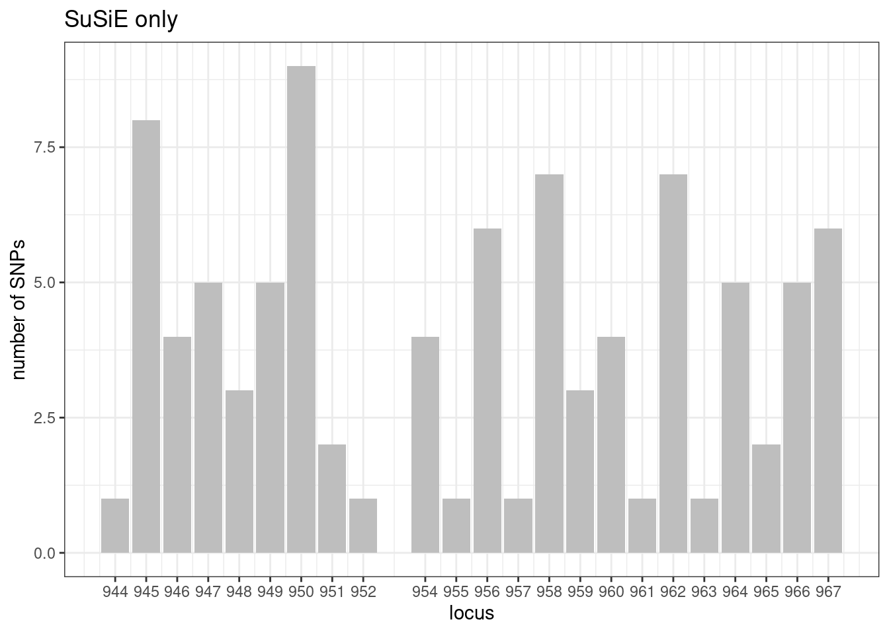
| Version | Author | Date |
|---|---|---|
| 0a79e85 | kevinlkx | 2023-12-04 |
Distribution of SuSiE only SNPs across loci
locus_counts.df <- data.frame(locus = unique(df$locus[df$type != "null"]),
n_dentist_only = 0,
n_susie_only = 0,
n_dentist_susie = 0)
locus_counts <- as.data.frame(table(df$locus[df$type == "SuSiE only"]))
colnames(locus_counts) <- c("locus", "count")
locus_counts.df$n_susie_only <- locus_counts$count[match(locus_counts.df$locus, locus_counts$locus)]
ggplot(locus_counts.df, aes(x = locus, y = n_susie_only)) +
geom_bar(stat = "identity", fill = "grey") +
scale_x_continuous(breaks=unique(locus_counts.df$locus), labels = unique(locus_counts.df$locus)) +
labs(x = "locus", y = "number of SNPs") +
ggtitle("SuSiE only") +
theme_bw()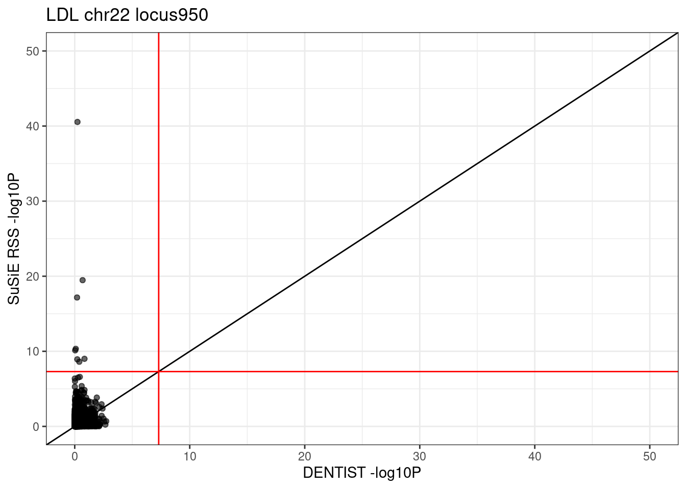
| Version | Author | Date |
|---|---|---|
| 0a79e85 | kevinlkx | 2023-12-04 |
# locus_counts.df %>% dplyr::arrange(desc(n_susie_only - n_dentist_only)) %>% head()Example locus
locus = "950"
region_df <- regions_df[regions_df$locus == locus,]
print(region_df)
target_bp <- round((region_df$start+region_df$stop)/2)
radius <- max(abs(region_df$start - target_bp), abs(region_df$stop - target_bp))
cat("target_BP:", target_bp, "radius:", radius, "\n")
# ldref_res <- load_UKBB_R_snp_info(region_df, "/project2/mstephens/wcrouse/UKB_LDR_0.1", "ukb_b38_0.1")
# length(ldref_res$R_snp_info$id)# chr start stop locus
# 950 chr22 24588236 26395662 950
# target_BP: 25491949 radius: 903713df_locus <- df[df$locus == locus,]
# df_locus %>% dplyr::arrange(desc(dentist.pval - susie.pval)) %>% head()
# scatter plot comparing DENTIST vs. SuSiE pvalues
ggplot(df_locus, aes(x = dentist.pval, y = susie.pval)) +
geom_point(alpha=0.6) +
xlim(0, 50) +
# ylim(0, 50) +
labs(x = "DENTIST -log10P", y = "SuSiE RSS -log10P", title = paste0(trait, " chr", CHR, " locus", locus)) +
geom_abline(intercept = 0, slope = 1) +
geom_vline(xintercept = -log10(5e-8), col = "red") +
geom_hline(yintercept = -log10(5e-8), col = "red") +
theme_bw()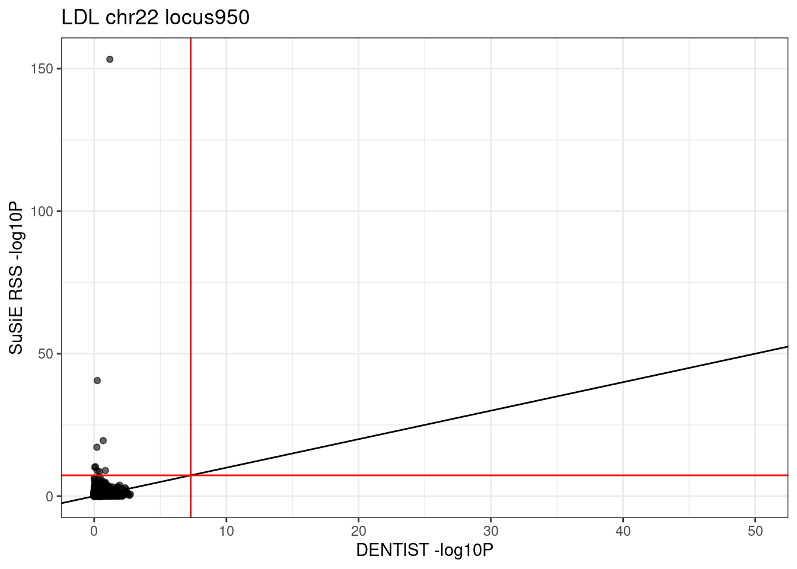
ggplot(df_locus %>% dplyr::mutate(susie.pval = ifelse(susie.pval > 10, 10, susie.pval)),
aes(x = condmean, y = z, col = susie.pval)) +
geom_point() +
geom_abline(intercept = 0, slope = 1) +
scale_colour_gradient(low = "grey", high = "blue", name = "SuSiE -log10P \n(truncated at 10)") +
labs(x = "Expected value from SuSiE", y = "Observed z scores", title = paste0(trait, " chr", CHR, " locus", locus)) +
theme_bw()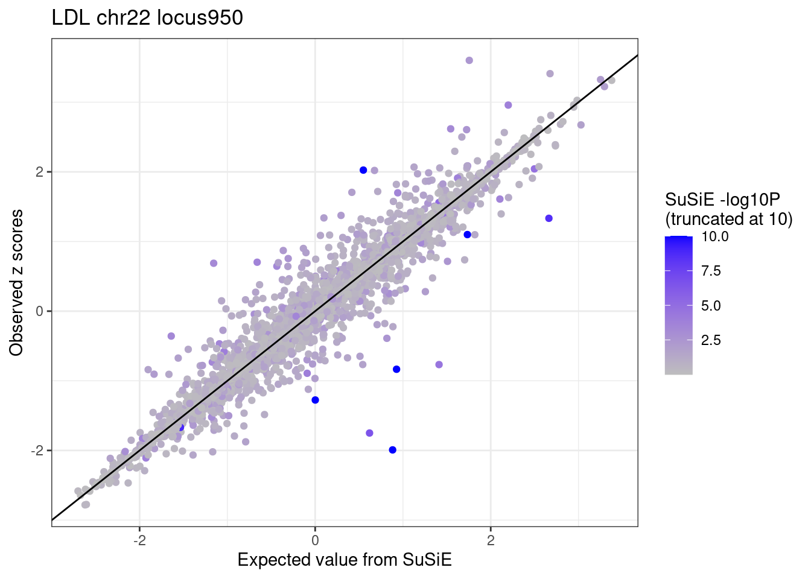
ggplot(df_locus,
aes(x = condmean, y = z, col = dentist.pval)) +
geom_point() +
geom_abline(intercept = 0, slope = 1) +
scale_colour_gradient(low = "grey", high = "blue", name = "DENTIST -log10P") +
labs(x = "Expected value from SuSiE", y = "Observed z scores", title = paste0(trait, " chr", CHR, " locus", locus)) +
theme_bw()
ggplot(df_locus, aes(x = condmean, y = z, col = type)) +
geom_point(alpha=0.6) +
geom_abline(intercept = 0, slope = 1) +
scale_colour_manual(values = c("null" = "grey", "SuSiE only" = "green", "DENTIST only" = "blue", "SuSiE & DENTIST" = "red")) +
labs(x = "Expected value from SuSiE", y = "Observed z scores", title = paste0(trait, " chr", CHR, " locus", locus)) +
theme_bw()
# ggplot(df_locus, aes(x = condmean, y = z, col = factor(allele_flipping))) +
# geom_point(alpha=0.6) +
# geom_abline(intercept = 0, slope = 1) +
# scale_colour_manual(values = c("0" = "grey", "1" = "red")) +
# labs(x = "Expected value", y = "Observed z scores from SuSiE",
# color = "Possible allele flipping from SuSiE",
# title = paste0(trait, " chr", CHR, " locus", locus)) +
# theme_bw()Genome-wide results
DENTIST results genome-wide
dentist.dir <- paste0("/project2/xinhe/shared_data/multigroup_ctwas/DENTIST/", trait)
dentist.res <- foreach(CHR=1:22) %do% {
dentist.res.file <- file.path(dentist.dir, paste0("LDL-ukb-d-30780_irnt.ukb_chr", CHR, ".b38.DENTIST.full.txt"))
if(file.exists(dentist.res.file)){
dentist.chr.res <- data.table::fread(dentist.res.file)
colnames(dentist.chr.res) <- c("rsID", "chisq", "LP", "ifDup")
cbind(chr = CHR, dentist.chr.res)
}else{
NULL
}
}
dentist.res.df <- do.call(rbind.data.frame, dentist.res)
data.table::fwrite(dentist.res.df, file.path(dentist.dir, paste0("LDL-ukb-d-30780_irnt.ukb_chrs.b38.DENTIST.full.txt.gz")), sep = "\t", col.names = TRUE)dentist.dir <- paste0("/project2/xinhe/shared_data/multigroup_ctwas/DENTIST/", trait)
dentist.res.df <- data.table::fread(file.path(dentist.dir, paste0("LDL-ukb-d-30780_irnt.ukb_chrs.b38.DENTIST.full.txt.gz")))
cat(sprintf("%d variants with DENTIST result in total \n", length(dentist.res.df$rsID)))
dentist_detected_snps <- dentist.res.df$rsID[which(dentist.res.df$LP > -log10(5e-8))]
cat(sprintf("%d detected variants (%.3f%%) with DENTIST pvalue < 5e-8.\n", length(dentist_detected_snps), length(dentist_detected_snps)/length(dentist.res.df$rsID)*100))# 8687900 variants with DENTIST result in total
# 292 detected variants (0.003%) with DENTIST pvalue < 5e-8.SuSiE RSS results genome-wide
susie_rss_dir <- paste0("/project2/xinhe/shared_data/multigroup_ctwas/ld_mismatch_susie_rss/", trait)
condz_dist.res <- foreach(CHR=1:22) %do% {
select_loci <- paste0("chr", CHR)
condz_dist.file <- file.path(susie_rss_dir, paste0(trait, ".condz.dist.", select_loci, "loci.rds"))
if(file.exists(condz_dist.file)){
condz_dist_chr <- readRDS(condz_dist.file)
condz_dist_chr.df <- do.call(rbind.data.frame, condz_dist_chr)
cbind(chr = CHR, condz_dist_chr.df)
}else{
NULL
}
}
# summary(condz_dist.res)
condz_dist_all.df <- do.call(rbind.data.frame, condz_dist.res)
saveRDS(condz_dist_all.df, file.path(susie_rss_dir, paste0(trait, ".susie_rss.condz.dist.rds")))susie_rss_dir <- paste0("/project2/xinhe/shared_data/multigroup_ctwas/ld_mismatch_susie_rss/", trait)
condz_dist_all.df <- readRDS(file.path(susie_rss_dir, paste0(trait, ".susie_rss.condz.dist.rds")))
susierss_detected_snps <- condz_dist_all.df$id[which(condz_dist_all.df$p_diff < 5e-8)]
susierss_detected_flipped_snps <- condz_dist_all.df$id[which(condz_dist_all.df$logLR > 2 & abs(condz_dist_all.df$z) > 2)]
cat(sprintf("%d variants with susie_rss result in total \n", length(condz_dist_all.df$id)))
cat(sprintf("%d detected variants (%.3f%%) with susie_rss pvalue < 5e-8.\n", length(susierss_detected_snps), length(susierss_detected_snps)/length(condz_dist_all.df$id)*100))
cat(sprintf("%d detected variants with susie_rss allele flipped.\n", length(susierss_detected_flipped_snps)))# 8841628 variants with susie_rss result in total
# 4607 detected variants (0.052%) with susie_rss pvalue < 5e-8.
# 8 detected variants with susie_rss allele flipped.aFib
trait <- "aFib"sumstats <- readRDS("/project2/xinhe/shared_data/multigroup_ctwas/gwas/gwas_processed/aFib-ebi-a-GCST006414.sumstats.RDS")
# sumstats$z <- sumstats$beta/sumstats$se
# z_snp <- sumstats[,c("ID", "A1", "A2", "z", "N")]
# colnames(z_snp) <- c("id", "A1", "A2", "z", "ss")
# z_snp <- z_snp[!(z_snp$id %in% z_snp$id[duplicated(z_snp$id)]),] #drop multiallelic variants (id not unique)
sumstats <- makeGRangesFromDataFrame(sumstats, start.field = "pos", end.field = "pos", keep.extra.columns = T)
sumstats_hg38 <- liftOver_hg19ToHg38(sumstats) %>% as.data.frame() %>%
dplyr::rename(chr = seqnames, pos = start, snp = SNP) %>%
dplyr::select(chr, pos, snp, A1, A2, beta, se, p, freq)
sumstats_hg38 <- mapgen::assign_snp_locus(sumstats_hg38, regions_df)Compare DENTIST and SuSiE RSS pvalues in chr22
load DENTIST results
CHR=22
dentist.dir <- paste0("/project2/xinhe/shared_data/multigroup_ctwas/DENTIST/", trait)
dentist.res.file <- file.path(dentist.dir, paste0("aFib-ebi-a-GCST006414.ukb_chr", CHR, ".b38.DENTIST.full.txt"))
dentist.chr.df <- data.table::fread(dentist.res.file)
colnames(dentist.chr.df) <- c("rsID", "chisq", "LP", "ifDup")
dentist.chr.snps <- dentist.chr.df$rsID
dentist_detected_snps <- dentist.chr.df$rsID[which(dentist.chr.df$LP > -log10(5e-8))]
cat(sprintf("%d variants with DENTIST result in chr%s \n", length(dentist.chr.snps), CHR))
cat(sprintf("%d detected variants with DENTIST pvalue < 5e-8.\n", length(dentist_detected_snps)))
# dentist.chr.short.snps <- read.table(file.path(dentist.dir, paste0("aFib-ebi-a-GCST006414.ukb_chr", CHR, ".b38.DENTIST.short.txt")))$V1
# length(dentist.chr.short.snps)
# setequal(dentist_detected_snps, dentist.chr.short.snps)# 109507 variants with DENTIST result in chr22
# 2802 detected variants with DENTIST pvalue < 5e-8.load DENTIST results with one iteration
dentist.dir <- paste0("/project2/xinhe/shared_data/multigroup_ctwas/DENTIST/", trait)
dentist.res.file <- file.path(dentist.dir, paste0("aFib-ebi-a-GCST006414.ukb_chr", CHR, ".b38.niter1.DENTIST.full.txt"))
dentist.chr.df <- data.table::fread(dentist.res.file)
colnames(dentist.chr.df) <- c("rsID", "chisq", "LP", "ifDup")
dentist.chr.snps <- dentist.chr.df$rsID
dentist_detected_snps <- dentist.chr.df$rsID[which(dentist.chr.df$LP > -log10(5e-8))]
cat(sprintf("%d variants with DENTIST result in chr%s \n", length(dentist.chr.snps), CHR))
cat(sprintf("%d detected variants with DENTIST pvalue < 5e-8.\n", length(dentist_detected_snps)))
# dentist.chr.short.snps <- read.table(file.path(dentist.dir, paste0("aFib-ebi-a-GCST006414.ukb_chr", CHR, ".b38.niter1.DENTIST.short.txt")))$V1
# length(dentist.chr.short.snps)
# setequal(dentist_detected_snps, dentist.chr.short.snps)# 109507 variants with DENTIST result in chr22
# 2596 detected variants with DENTIST pvalue < 5e-8.Load Allele Frequency
dentist.dir <- paste0("/project2/xinhe/shared_data/multigroup_ctwas/DENTIST/", trait)
dentist.chr.freq.df <- data.table::fread(file.path(dentist.dir, paste0("aFib-ebi-a-GCST006414.ukb_chr", CHR, ".b38.frq")))load SuSiE RSS result
select_loci <- paste0("chr", CHR)
susie_rss_dir <- paste0("/project2/xinhe/shared_data/multigroup_ctwas/ld_mismatch_susie_rss/", trait)
condz_dist_chr <- readRDS(file.path(susie_rss_dir, paste0(trait, ".condz.dist.", select_loci, "loci.rds")))
condz_dist_chr.df <- do.call(rbind.data.frame, condz_dist_chr)
susierss.chr.snps <- condz_dist_chr.df$id
susierss_detected_snps <- condz_dist_chr.df$id[which(condz_dist_chr.df$p_diff < 5e-8)]
susierss_detected_flipped_snps <- condz_dist_chr.df$id[which(condz_dist_chr.df$logLR > 2 & abs(condz_dist_chr.df$z) > 2)]
cat(sprintf("%d variants with susie_rss result in chr%s \n", length(susierss.chr.snps), CHR))
cat(sprintf("%d detected variants with susie_rss pvalue < 5e-8.\n", length(susierss_detected_snps)))
cat(sprintf("%d detected variants with susie_rss allele flipped.\n", length(susierss_detected_flipped_snps)))# 110716 variants with susie_rss result in chr22
# 449 detected variants with susie_rss pvalue < 5e-8.
# 12 detected variants with susie_rss allele flipped.Compare SuSiE RSS with DENTIST result (one iteration)
cat(sprintf("%d variants with DENTIST result \n", length(dentist.chr.snps)))
cat(sprintf("%d variants with susie_rss result \n", length(susierss.chr.snps)))
cat(sprintf("%d variants with both DENTIST and susie_rss result \n", length(intersect(dentist.chr.snps, susierss.chr.snps))))
cat(sprintf("%d variants detected by both DENTIST and susie_rss (pvalue < 5e-8).\n", length(intersect(dentist_detected_snps, susierss_detected_snps))))
common.snps <- intersect(dentist.chr.snps, susierss.chr.snps)
df <- data.frame(rsID = common.snps, dentist.pval = NA, susie.pval = NA)
m.dentist <- match(common.snps, dentist.chr.df$rsID)
df$dentist.pval <- dentist.chr.df$LP[m.dentist]
m.susie <- match(common.snps, condz_dist_chr.df$id)
df$susie.pval <- -log10(condz_dist_chr.df$p_diff[m.susie])
df$z <- condz_dist_chr.df$z[m.susie]
df$condmean <- condz_dist_chr.df$condmean[m.susie]
df$logLR <- condz_dist_chr.df$logLR[m.susie]
df$Freq_A1 <- dentist.chr.freq.df$Freq_A1[match(common.snps, dentist.chr.freq.df$RS_ID)]
df$MAF <- pmin(df$Freq_A1, 1-df$Freq_A1)
m.sumstats <- match(common.snps, sumstats_hg38$snp)
df$p <- sumstats_hg38$p[m.sumstats]
df$locus <- sumstats_hg38$locus[m.sumstats]
df$freq_A1_GWAS <- sumstats_hg38$freq[m.sumstats]
df$MAF_GWAS <- pmin(df$freq_A1_GWAS, 1-df$freq_A1_GWAS)
df <- df %>% dplyr::mutate(allele_flipping = ifelse(logLR > 2 & abs(z) > 2, 1, 0))
df <- df %>% dplyr::mutate(type = case_when(susie.pval > -log10(5e-8) & dentist.pval > -log10(5e-8) ~ "SuSiE & DENTIST",
susie.pval > -log10(5e-8) ~ "SuSiE only",
dentist.pval > -log10(5e-8) ~ "DENTIST only",
.default = "null"))
df$type <- factor(df$type, levels = c("null", "SuSiE only", "DENTIST only", "SuSiE & DENTIST"))
table(df$type)# 109507 variants with DENTIST result
# 110716 variants with susie_rss result
# 109504 variants with both DENTIST and susie_rss result
# 355 variants detected by both DENTIST and susie_rss (pvalue < 5e-8).
#
# null SuSiE only DENTIST only SuSiE & DENTIST
# 106847 61 2241 355ggplot(df, aes(x = dentist.pval, y = susie.pval)) +
geom_point(alpha=0.6) +
xlim(0, 100) + ylim(0, 100) +
labs(x = "DENTIST -log10P", y = "SuSiE RSS -log10P", title = paste0(trait, " chr", CHR)) +
geom_abline(intercept = 0, slope = 1) +
geom_vline(xintercept = -log10(5e-8), col = "red") +
geom_hline(yintercept = -log10(5e-8), col = "red") +
theme_bw()# Warning: Removed 25 rows containing missing values (`geom_point()`).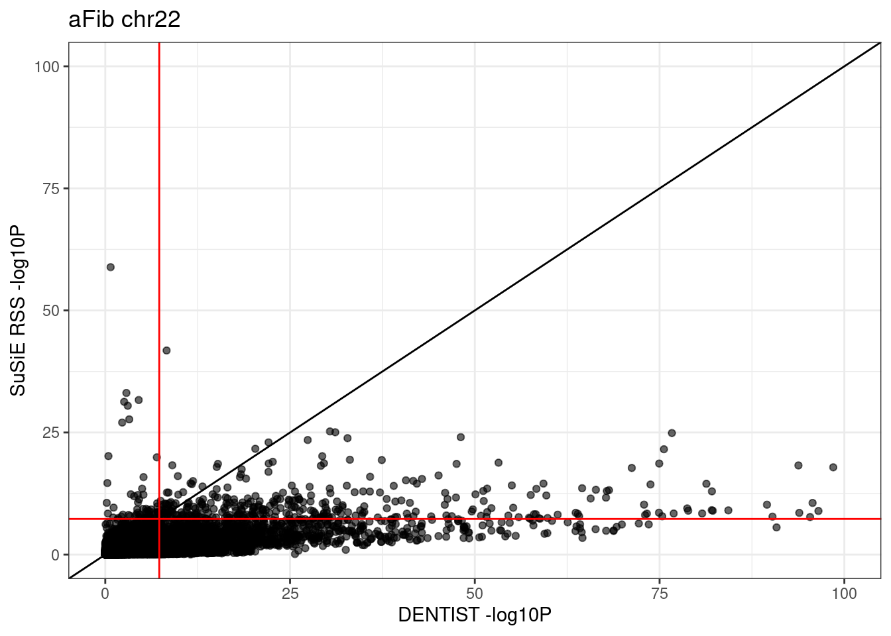
| Version | Author | Date |
|---|---|---|
| 0a79e85 | kevinlkx | 2023-12-04 |
ggplot(df %>% dplyr::mutate(susie.pval = ifelse(susie.pval > 10, 10, susie.pval)),
aes(x = condmean, y = z, col = susie.pval)) +
geom_point(alpha=0.6) +
geom_abline(intercept = 0, slope = 1) +
scale_colour_gradient(low = "grey", high = "blue", name = "SuSiE -log10P \n(truncated at 10)") +
labs(x = "Expected value from SuSiE", y = "Observed z scores", title = paste0(trait, " chr", CHR)) +
theme_bw()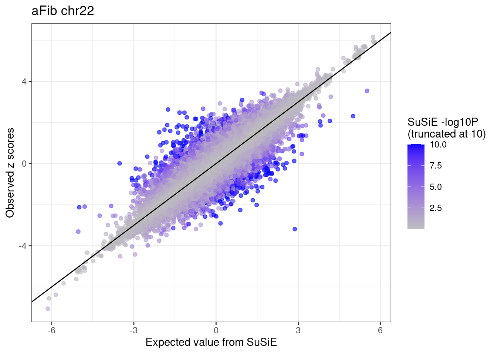
ggplot(df %>% dplyr::mutate(dentist.pval = ifelse(dentist.pval > 10, 10, dentist.pval)),
aes(x = condmean, y = z, col = dentist.pval)) +
geom_point(alpha=0.6) +
geom_abline(intercept = 0, slope = 1) +
scale_colour_gradient(low = "grey", high = "blue", name = "DENTIST -log10P \n(truncated at 10)") +
labs(x = "Expected value from SuSiE", y = "Observed z scores", title = paste0(trait, " chr", CHR)) +
theme_bw()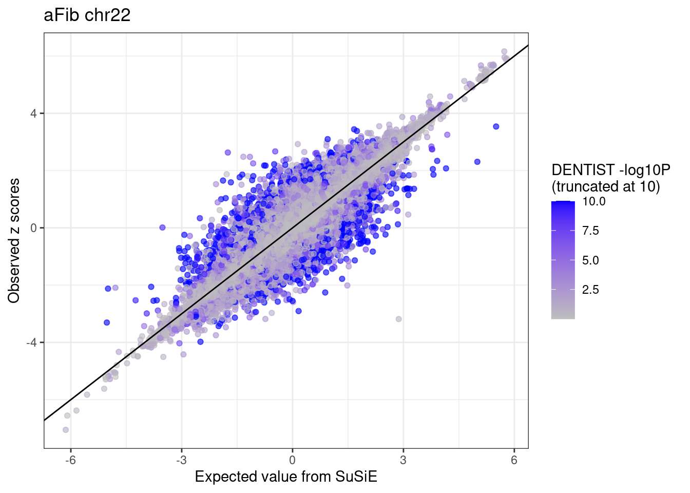
ggplot(df, aes(x = condmean, y = z, col = type)) +
geom_point(alpha=0.6) +
geom_abline(intercept = 0, slope = 1) +
scale_colour_manual(values = c("null" = "grey", "SuSiE only" = "green", "DENTIST only" = "blue", "SuSiE & DENTIST" = "red")) +
labs(x = "Expected value from SuSiE", y = "Observed z scores", title = paste0(trait, " chr", CHR)) +
theme_bw()
ggplot(df, aes(x = condmean, y = z, col = factor(allele_flipping))) +
geom_point(alpha=0.6) +
scale_colour_manual(values = c("0" = "grey", "1" = "red")) +
labs(x = "Expected value", y = "Observed z scores from SuSiE",
color = "Possible allele flipping from SuSiE", title = paste0(trait, " chr", CHR)) +
theme_bw()
GWAS p-values
ggplot(df, aes(x=type, y=-log10(p), fill=type)) +
geom_boxplot(show.legend = FALSE) +
scale_fill_manual(values = c("null" = "grey", "SuSiE only" = "green", "DENTIST only" = "blue", "SuSiE & DENTIST" = "red")) +
theme_bw()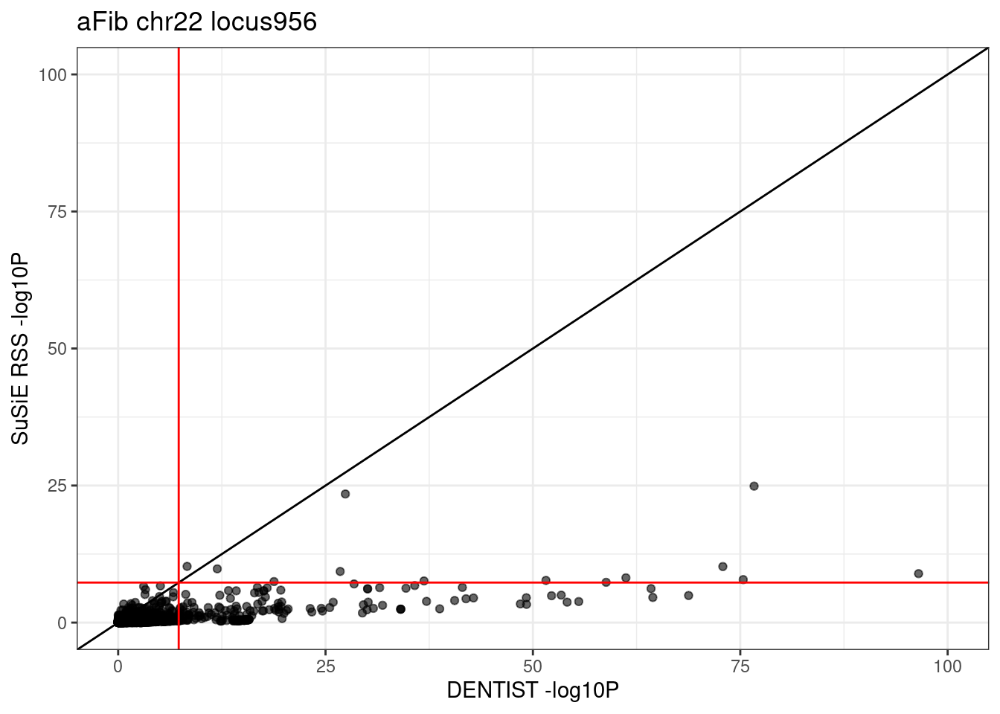
| Version | Author | Date |
|---|---|---|
| 0a79e85 | kevinlkx | 2023-12-04 |
ggplot(df[df$type != "null",], aes(x=type, y=-log10(p), fill=type)) +
geom_boxplot(show.legend = FALSE) +
scale_fill_manual(values = c("null" = "grey", "SuSiE only" = "green", "DENTIST only" = "blue", "SuSiE & DENTIST" = "red")) +
theme_bw()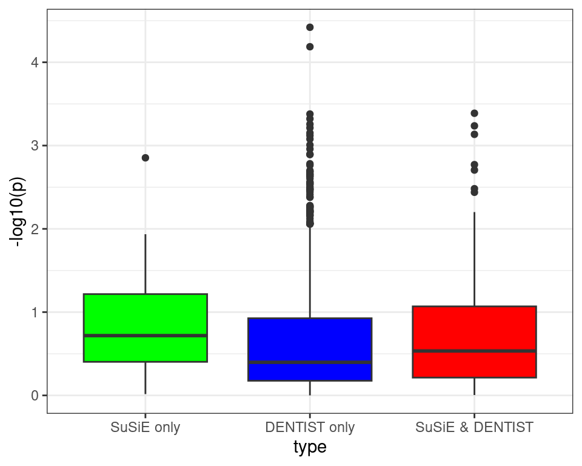
| Version | Author | Date |
|---|---|---|
| 0a79e85 | kevinlkx | 2023-12-04 |
Allele frequency
ggplot(df, aes(x=type, y=MAF, fill=type)) +
geom_boxplot(show.legend = FALSE) +
scale_fill_manual(values = c("null" = "grey", "SuSiE only" = "green", "DENTIST only" = "blue", "SuSiE & DENTIST" = "red")) +
theme_bw()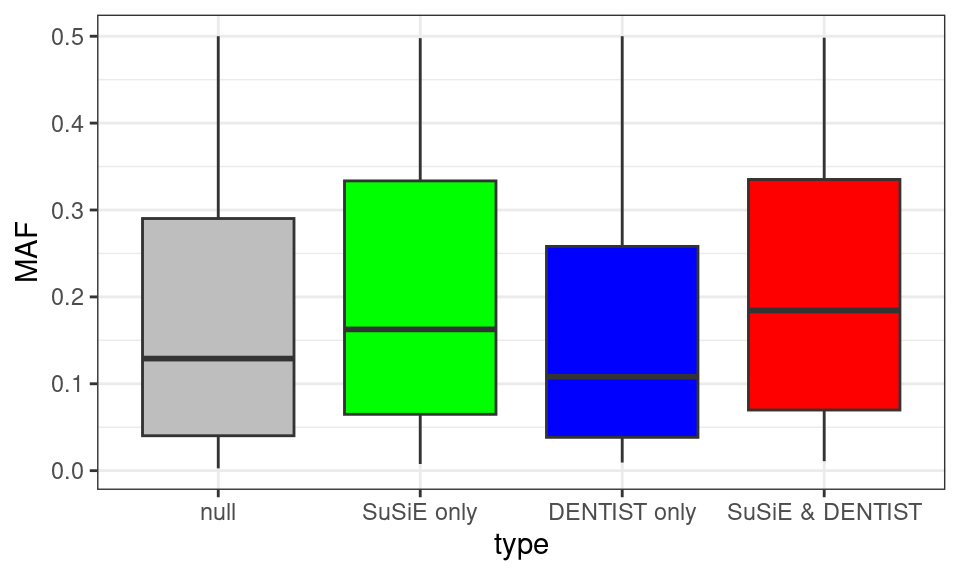
p1 <- ggplot(df[df$type == "SuSiE only",], aes(x = MAF)) +
geom_histogram(show.legend = FALSE, fill = "green", color = "black") +
ggtitle("SuSiE only") +
theme_bw()
p2 <- ggplot(df[df$type == "DENTIST only",], aes(x = MAF)) +
geom_histogram(show.legend = FALSE, fill = "blue", color = "black") +
ggtitle("DENTIST only") +
theme_bw()
p3 <- ggplot(df[df$type == "SuSiE & DENTIST",], aes(x = MAF)) +
geom_histogram(show.legend = FALSE, fill = "red", color = "black") +
ggtitle("SuSiE & DENTIST") +
theme_bw()
p4 <- ggplot(df[df$type == "null",], aes(x = MAF)) +
geom_histogram(show.legend = FALSE, fill = "grey", color = "black") +
ggtitle("null") +
theme_bw()
cowplot::plot_grid(p1, p2, p3, p4)# `stat_bin()` using `bins = 30`. Pick better value with `binwidth`.
# `stat_bin()` using `bins = 30`. Pick better value with `binwidth`.
# `stat_bin()` using `bins = 30`. Pick better value with `binwidth`.
# `stat_bin()` using `bins = 30`. Pick better value with `binwidth`.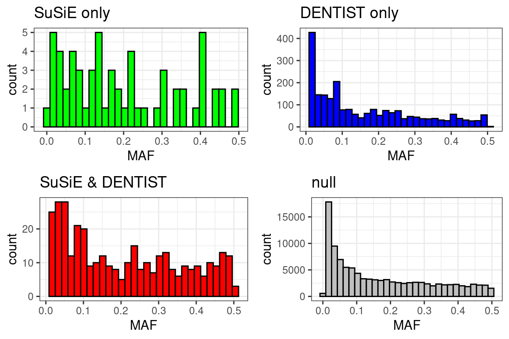
Distribution of detected SNPs across loci
locus_counts.df <- data.frame(locus = unique(df$locus[df$type != "null"]),
n_dentist_only = 0,
n_susie_only = 0,
n_dentist_susie = 0)
locus_counts <- as.data.frame(table(df$locus[df$type == "DENTIST only"]))
colnames(locus_counts) <- c("locus", "count")
locus_counts.df$n_dentist_only <- locus_counts$count[match(locus_counts.df$locus, locus_counts$locus)]
locus_counts <- as.data.frame(table(df$locus[df$type == "SuSiE only"]))
colnames(locus_counts) <- c("locus", "count")
locus_counts.df$n_susie_only <- locus_counts$count[match(locus_counts.df$locus, locus_counts$locus)]
locus_counts <- as.data.frame(table(df$locus[df$type == "SuSiE & DENTIST"]))
colnames(locus_counts) <- c("locus", "count")
locus_counts.df$n_dentist_susie <- locus_counts$count[match(locus_counts.df$locus, locus_counts$locus)]
locus_counts.df[is.na(locus_counts.df)] <- 0
p1 <- ggplot(locus_counts.df, aes(x = locus, y = n_dentist_only)) +
geom_bar(stat = "identity", fill = "blue") +
scale_x_continuous(breaks=unique(locus_counts.df$locus), labels = unique(locus_counts.df$locus)) +
labs(x = "locus", y = "number of SNPs") +
ggtitle("DENTIST only") +
theme_bw()
p2 <- ggplot(locus_counts.df, aes(x = locus, y = n_susie_only)) +
geom_bar(stat = "identity", fill = "green") +
scale_x_continuous(breaks=unique(locus_counts.df$locus), labels = unique(locus_counts.df$locus)) +
labs(x = "locus", y = "number of SNPs") +
ggtitle("SuSiE only") +
theme_bw()
p3 <- ggplot(locus_counts.df, aes(x = locus, y = n_dentist_susie)) +
geom_bar(stat = "identity", fill = "red") +
scale_x_continuous(breaks=unique(locus_counts.df$locus), labels = unique(locus_counts.df$locus)) +
labs(x = "locus", y = "number of SNPs") +
ggtitle("SuSiE & DENTIST") +
theme_bw()
cowplot::plot_grid(p1, p2, p3, ncol = 1)
locus_counts.df %>% dplyr::arrange(desc(n_dentist_only - n_susie_only)) %>% head()# locus n_dentist_only n_susie_only n_dentist_susie
# 1 956 194 0 18
# 2 960 194 1 11
# 3 949 177 1 6
# 4 952 171 1 19
# 5 957 152 0 24
# 6 953 146 3 21SNPs with large difference between DENTIST and SuSiE p-values
diff_df <- df %>% dplyr::filter(abs(dentist.pval - susie.pval) > 10)
table(diff_df$type)
table(diff_df$locus[diff_df$type == "DENTIST only"])
locus_counts.df <- data.frame(locus = unique(diff_df$locus[diff_df$type != "null"]),
n_dentist_only = 0,
n_susie_only = 0,
n_dentist_susie = 0)
locus_counts <- as.data.frame(table(diff_df$locus[diff_df$type == "DENTIST only"]))
colnames(locus_counts) <- c("locus", "count")
locus_counts.df$n_dentist_only <- locus_counts$count[match(locus_counts.df$locus, locus_counts$locus)]
locus_counts <- as.data.frame(table(diff_df$locus[diff_df$type == "SuSiE only"]))
colnames(locus_counts) <- c("locus", "count")
locus_counts.df$n_susie_only <- locus_counts$count[match(locus_counts.df$locus, locus_counts$locus)]
locus_counts <- as.data.frame(table(diff_df$locus[diff_df$type == "SuSiE & DENTIST"]))
colnames(locus_counts) <- c("locus", "count")
locus_counts.df$n_dentist_susie <- locus_counts$count[match(locus_counts.df$locus, locus_counts$locus)]
locus_counts.df[is.na(locus_counts.df)] <- 0
p1 <- ggplot(locus_counts.df, aes(x = locus, y = n_dentist_only)) +
geom_bar(stat = "identity", fill = "blue") +
scale_x_continuous(breaks=unique(locus_counts.df$locus), labels = unique(locus_counts.df$locus)) +
labs(x = "locus", y = "number of SNPs") +
ggtitle("DENTIST only") +
theme_bw()
p2 <- ggplot(locus_counts.df, aes(x = locus, y = n_susie_only)) +
geom_bar(stat = "identity", fill = "green") +
scale_x_continuous(breaks=unique(locus_counts.df$locus), labels = unique(locus_counts.df$locus)) +
labs(x = "locus", y = "number of SNPs") +
ggtitle("SuSiE only") +
theme_bw()
p3 <- ggplot(locus_counts.df, aes(x = locus, y = n_dentist_susie)) +
geom_bar(stat = "identity", fill = "red") +
scale_x_continuous(breaks=unique(locus_counts.df$locus), labels = unique(locus_counts.df$locus)) +
labs(x = "locus", y = "number of SNPs") +
ggtitle("SuSiE & DENTIST") +
theme_bw()
cowplot::plot_grid(p1, p2, p3, ncol = 1)
# locus_counts.df %>% dplyr::arrange(desc(n_dentist_only - n_susie_only)) %>% head()#
# null SuSiE only DENTIST only SuSiE & DENTIST
# 0 12 1041 222
#
# 944 945 946 947 948 949 950 951 952 953 954 955 956 957 958 959 960 961 962 963
# 4 13 58 28 47 91 26 6 73 75 76 45 144 29 31 6 111 17 24 41
# 964 965 966 967
# 21 11 24 40Example locus
locus = "956"
region_df <- regions_df[regions_df$locus == locus,]
print(region_df)
target_bp <- round((region_df$start+region_df$stop)/2)
radius <- max(abs(region_df$start - target_bp), abs(region_df$stop - target_bp))
cat("target_BP:", target_bp, "radius:", radius, "\n")
# ldref_res <- load_UKBB_R_snp_info(region_df, "/project2/mstephens/wcrouse/UKB_LDR_0.1", "ukb_b38_0.1")
# length(ldref_res$R_snp_info$id)# chr start stop locus
# 956 chr22 34098925 35134992 956
# target_BP: 34616958 radius: 518034df_locus <- df[df$locus == locus,]
# df_locus %>% dplyr::arrange(desc(dentist.pval - susie.pval)) %>% head()
# scatter plot comparing DENTIST vs. SuSiE pvalues
ggplot(df_locus, aes(x = dentist.pval, y = susie.pval)) +
geom_point(alpha=0.6) +
xlim(0, 100) + ylim(0, 100) +
labs(x = "DENTIST -log10P", y = "SuSiE RSS -log10P", title = paste0(trait, " chr", CHR, " locus", locus)) +
geom_abline(intercept = 0, slope = 1) +
geom_vline(xintercept = -log10(5e-8), col = "red") +
geom_hline(yintercept = -log10(5e-8), col = "red") +
theme_bw()# Warning: Removed 7 rows containing missing values (`geom_point()`).
ggplot(df_locus,
aes(x = condmean, y = z, col = susie.pval)) +
geom_point() +
geom_abline(intercept = 0, slope = 1) +
scale_colour_gradient(low = "grey", high = "blue", name = "SuSiE -log10P") +
labs(x = "Expected value from SuSiE", y = "Observed z scores", title = paste0(trait, " chr", CHR, " locus", locus)) +
theme_bw()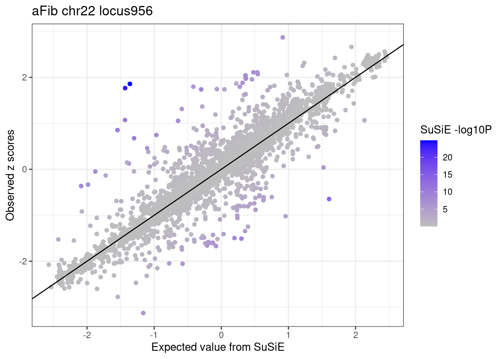
ggplot(df_locus %>% dplyr::mutate(dentist.pval = ifelse(dentist.pval > 10, 10, dentist.pval)),
aes(x = condmean, y = z, col = dentist.pval)) +
geom_point() +
geom_abline(intercept = 0, slope = 1) +
scale_colour_gradient(low = "grey", high = "blue", name = "DENTIST -log10P \n(truncated at 10)") +
labs(x = "Expected value from SuSiE", y = "Observed z scores", title = paste0(trait, " chr", CHR, " locus", locus)) +
theme_bw()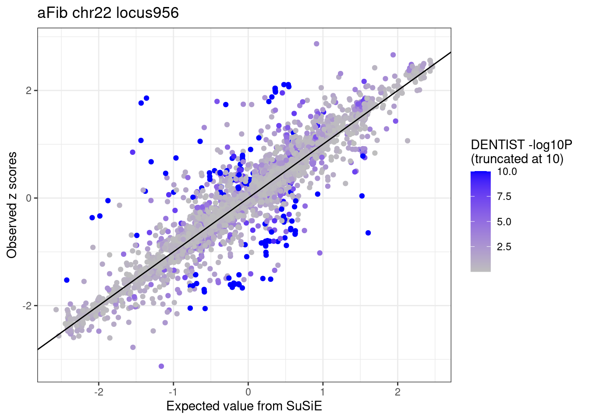
ggplot(df_locus, aes(x = condmean, y = z, col = type)) +
geom_point(alpha=0.6) +
geom_abline(intercept = 0, slope = 1) +
scale_colour_manual(values = c("null" = "grey", "SuSiE only" = "green", "DENTIST only" = "blue", "SuSiE & DENTIST" = "red")) +
labs(x = "Expected value from SuSiE", y = "Observed z scores", title = paste0(trait, " chr", CHR, " locus", locus)) +
theme_bw()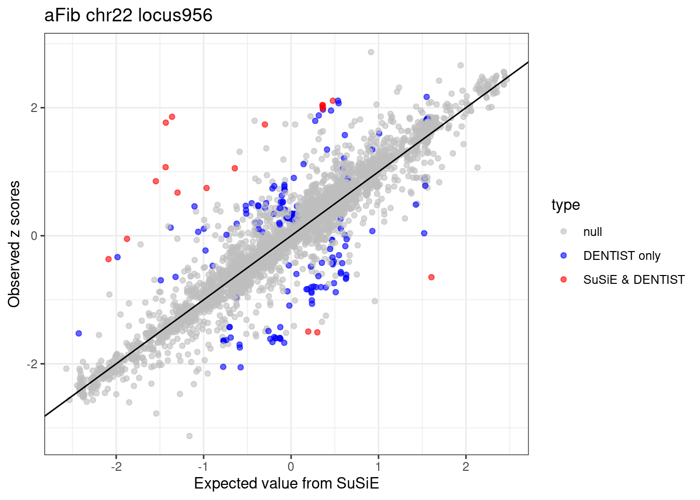
# ggplot(df_locus, aes(x = condmean, y = z, col = factor(allele_flipping))) +
# geom_point(alpha=0.6) +
# geom_abline(intercept = 0, slope = 1) +
# scale_colour_manual(values = c("0" = "grey", "1" = "red")) +
# labs(x = "Expected value", y = "Observed z scores from SuSiE",
# color = "Possible allele flipping from SuSiE",
# title = paste0(trait, " chr", CHR, " locus", locus)) +
# theme_bw()Genome-wide results
DENTIST results genome-wide
dentist.dir <- paste0("/project2/xinhe/shared_data/multigroup_ctwas/DENTIST/", trait)
dentist.res <- foreach(CHR=1:22) %do% {
dentist.res.file <- file.path(dentist.dir, paste0("aFib-ebi-a-GCST006414.ukb_chr", CHR, ".b38.DENTIST.full.txt"))
if(file.exists(dentist.res.file)){
dentist.chr.res <- data.table::fread(dentist.res.file)
colnames(dentist.chr.res) <- c("rsID", "chisq", "LP", "ifDup")
cbind(chr = CHR, dentist.chr.res)
}else{
NULL
}
}
dentist.res.df <- do.call(rbind.data.frame, dentist.res)
data.table::fwrite(dentist.res.df, file.path(dentist.dir, paste0("aFib-ebi-a-GCST006414.ukb_chrs.b38.DENTIST.full.txt.gz")), sep = "\t", col.names = TRUE)dentist.dir <- paste0("/project2/xinhe/shared_data/multigroup_ctwas/DENTIST/", trait)
dentist.res.df <- data.table::fread(file.path(dentist.dir, paste0("aFib-ebi-a-GCST006414.ukb_chrs.b38.DENTIST.full.txt.gz")))
cat(sprintf("%d variants with DENTIST result in total \n", length(dentist.res.df$rsID)))
dentist_detected_snps <- dentist.res.df$rsID[which(dentist.res.df$LP > -log10(5e-8))]
cat(sprintf("%d detected variants (%.3f%%) with DENTIST pvalue < 5e-8.\n", length(dentist_detected_snps), length(dentist_detected_snps)/length(dentist.res.df$rsID)*100))# 8230059 variants with DENTIST result in total
# 321808 detected variants (3.910%) with DENTIST pvalue < 5e-8.DENTIST 1 iteration results genome-wide
dentist.dir <- paste0("/project2/xinhe/shared_data/multigroup_ctwas/DENTIST/", trait)
dentist.res <- foreach(CHR=1:22) %do% {
dentist.res.file <- file.path(dentist.dir, paste0("aFib-ebi-a-GCST006414.ukb_chr", CHR, ".b38.niter1.DENTIST.full.txt"))
if(file.exists(dentist.res.file)){
dentist.chr.res <- data.table::fread(dentist.res.file)
colnames(dentist.chr.res) <- c("rsID", "chisq", "LP", "ifDup")
cbind(chr = CHR, dentist.chr.res)
}else{
NULL
}
}
dentist.res.df <- do.call(rbind.data.frame, dentist.res)
data.table::fwrite(dentist.res.df, file.path(dentist.dir, paste0("aFib-ebi-a-GCST006414.ukb_chrs.b38.niter1.DENTIST.full.txt.gz")), sep = "\t", col.names = TRUE)dentist.dir <- paste0("/project2/xinhe/shared_data/multigroup_ctwas/DENTIST/", trait)
dentist.1iter.res.df <- data.table::fread(file.path(dentist.dir, paste0("aFib-ebi-a-GCST006414.ukb_chrs.b38.niter1.DENTIST.full.txt.gz")))
cat(sprintf("%d variants with DENTIST result in total \n", length(dentist.res.df$rsID)))
dentist.1iter_detected_snps <- dentist.1iter.res.df$rsID[which(dentist.1iter.res.df$LP > -log10(5e-8))]
cat(sprintf("%d detected variants (%.3f%%) with DENTIST pvalue < 5e-8.\n", length(dentist.1iter_detected_snps), length(dentist.1iter_detected_snps)/length(dentist.1iter.res.df$rsID)*100))# 8230059 variants with DENTIST result in total
# 307578 detected variants (3.737%) with DENTIST pvalue < 5e-8.SuSiE RSS results genome-wide
susie_rss_dir <- paste0("/project2/xinhe/shared_data/multigroup_ctwas/ld_mismatch_susie_rss/", trait)
condz_dist.res <- foreach(CHR=1:22) %do% {
select_loci <- paste0("chr", CHR)
condz_dist.file <- file.path(susie_rss_dir, paste0(trait, ".condz.dist.", select_loci, "loci.rds"))
if(file.exists(condz_dist.file)){
condz_dist_chr <- readRDS(condz_dist.file)
condz_dist_chr.df <- do.call(rbind.data.frame, condz_dist_chr)
cbind(chr = CHR, condz_dist_chr.df)
}else{
NULL
}
}
# summary(condz_dist.res)
condz_dist_all.df <- do.call(rbind.data.frame, condz_dist.res)
saveRDS(condz_dist_all.df, file.path(susie_rss_dir, paste0(trait, ".susie_rss.condz.dist.rds")))susie_rss_dir <- paste0("/project2/xinhe/shared_data/multigroup_ctwas/ld_mismatch_susie_rss/", trait)
condz_dist_all.df <- readRDS(file.path(susie_rss_dir, paste0(trait, ".susie_rss.condz.dist.rds")))
susierss_detected_snps <- condz_dist_all.df$id[which(condz_dist_all.df$p_diff < 5e-8)]
susierss_detected_flipped_snps <- condz_dist_all.df$id[which(condz_dist_all.df$logLR > 2 & abs(condz_dist_all.df$z) > 2)]
cat(sprintf("%d variants with susie_rss result in total \n", length(condz_dist_all.df$id)))
cat(sprintf("%d detected variants (%.3f%%) with susie_rss pvalue < 5e-8.\n", length(susierss_detected_snps), length(susierss_detected_snps)/length(condz_dist_all.df$id)*100))
cat(sprintf("%d detected variants with susie_rss allele flipped.\n", length(susierss_detected_flipped_snps)))# 8258166 variants with susie_rss result in total
# 38330 detected variants (0.464%) with susie_rss pvalue < 5e-8.
# 439 detected variants with susie_rss allele flipped.
sessionInfo()# R version 4.2.0 (2022-04-22)
# Platform: x86_64-pc-linux-gnu (64-bit)
# Running under: CentOS Linux 7 (Core)
#
# Matrix products: default
# BLAS/LAPACK: /software/openblas-0.3.13-el7-x86_64/lib/libopenblas_haswellp-r0.3.13.so
#
# locale:
# [1] LC_CTYPE=en_US.UTF-8 LC_NUMERIC=C
# [3] LC_TIME=en_US.UTF-8 LC_COLLATE=en_US.UTF-8
# [5] LC_MONETARY=en_US.UTF-8 LC_MESSAGES=en_US.UTF-8
# [7] LC_PAPER=en_US.UTF-8 LC_NAME=C
# [9] LC_ADDRESS=C LC_TELEPHONE=C
# [11] LC_MEASUREMENT=en_US.UTF-8 LC_IDENTIFICATION=C
#
# attached base packages:
# [1] stats4 stats graphics grDevices utils datasets methods
# [8] base
#
# other attached packages:
# [1] rtracklayer_1.58.0 GenomicRanges_1.48.0 GenomeInfoDb_1.34.9
# [4] IRanges_2.32.0 S4Vectors_0.36.1 BiocGenerics_0.44.0
# [7] forcats_1.0.0 stringr_1.5.0 dplyr_1.1.0
# [10] purrr_1.0.1 readr_2.1.4 tidyr_1.3.0
# [13] tibble_3.1.8 ggplot2_3.4.1 tidyverse_1.3.2
# [16] data.table_1.14.6 foreach_1.5.2 susieR_0.12.35
# [19] ctwas_0.1.35 workflowr_1.7.0
#
# loaded via a namespace (and not attached):
# [1] googledrive_2.0.0 colorspace_2.1-0
# [3] rjson_0.2.21 ellipsis_0.3.2
# [5] rprojroot_2.0.3 XVector_0.38.0
# [7] fs_1.6.1 rstudioapi_0.14
# [9] farver_2.1.1 fansi_1.0.4
# [11] lubridate_1.9.2 xml2_1.3.3
# [13] R.methodsS3_1.8.2 codetools_0.2-18
# [15] logging_0.10-108 cachem_1.0.6
# [17] knitr_1.42 jsonlite_1.8.4
# [19] Rsamtools_2.12.0 broom_1.0.3
# [21] dbplyr_2.3.0 R.oo_1.25.0
# [23] compiler_4.2.0 httr_1.4.4
# [25] backports_1.4.1 assertthat_0.2.1
# [27] Matrix_1.5-3 fastmap_1.1.0
# [29] gargle_1.3.0 cli_3.6.0
# [31] later_1.3.0 htmltools_0.5.4
# [33] tools_4.2.0 gtable_0.3.1
# [35] glue_1.6.2 GenomeInfoDbData_1.2.9
# [37] Rcpp_1.0.10 Biobase_2.58.0
# [39] cellranger_1.1.0 jquerylib_0.1.4
# [41] vctrs_0.5.2 Biostrings_2.66.0
# [43] iterators_1.0.14 xfun_0.37
# [45] plyranges_1.18.0 ps_1.7.2
# [47] rvest_1.0.3 timechange_0.2.0
# [49] lifecycle_1.0.3 irlba_2.3.5
# [51] mapgen_0.5.7.9000 restfulr_0.0.15
# [53] XML_3.99-0.13 googlesheets4_1.0.1
# [55] getPass_0.2-2 zlibbioc_1.44.0
# [57] scales_1.2.1 MatrixGenerics_1.10.0
# [59] hms_1.1.2 promises_1.2.0.1
# [61] parallel_4.2.0 SummarizedExperiment_1.28.0
# [63] yaml_2.3.7 sass_0.4.5
# [65] reshape_0.8.9 stringi_1.7.12
# [67] highr_0.10 BiocIO_1.8.0
# [69] BiocParallel_1.32.5 rlang_1.0.6
# [71] pkgconfig_2.0.3 matrixStats_0.63.0
# [73] bitops_1.0-7 evaluate_0.20
# [75] lattice_0.20-45 labeling_0.4.2
# [77] GenomicAlignments_1.34.0 cowplot_1.1.1
# [79] processx_3.8.0 tidyselect_1.2.0
# [81] plyr_1.8.7 magrittr_2.0.3
# [83] R6_2.5.1 generics_0.1.3
# [85] DelayedArray_0.24.0 DBI_1.1.3
# [87] pgenlibr_0.3.3 pillar_1.8.1
# [89] haven_2.5.1 whisker_0.4
# [91] withr_2.5.0 RCurl_1.98-1.10
# [93] mixsqp_0.3-43 modelr_0.1.10
# [95] crayon_1.5.2 utf8_1.2.3
# [97] tzdb_0.3.0 rmarkdown_2.20
# [99] grid_4.2.0 readxl_1.4.2
# [101] callr_3.7.3 git2r_0.30.1
# [103] reprex_2.0.2 digest_0.6.31
# [105] httpuv_1.6.5 R.utils_2.12.2
# [107] munsell_0.5.0 bslib_0.4.2